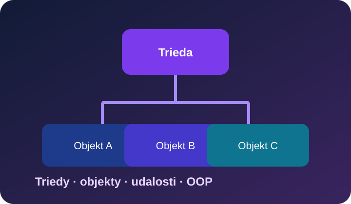

Šablóny v C++
Napíšeme algoritmus raz a použijeme ho s viacerými dátovými typmi.

Ciele hodiny
Vysvetlíš generické programovanie, vytvoríš funkčnú šablónu, použiješ ju pre viac typov, vytvoríš jednoduchú triednu šablónu a vysvetlíš, kde sa šablóny používajú v štandardnej knižnici C++.
Plán 45 minút
| Čas | Činnosť |
|---|---|
| 0–5 min | Opakovanie štruktúr a dátových typov z lekcie 19 |
| 5–12 min | Problém opakovaných funkcií a nápad šablóny |
| 12–22 min | Funkčné šablóny a odvodenie typu |
| 22–30 min | Viac typových parametrov |
| 30–37 min | Šablónové triedy |
| 37–42 min | std::vector, evidencia žiakov a Win32 |
| 42–45 min | Úloha, otázky a zhrnutie |
1. Prečo potrebujeme šablóny?
Predstav si, že chceš vrátiť väčšiu z dvoch hodnôt. Samostatná funkcia pre int a ďalšia pre double by opakovali ten istý algoritmus. Šablóna umožňuje napísať všeobecný predpis; kompilátor pri použití vytvorí konkrétnu verziu pre zadaný typ.
#include <iostream>
int vacsie(int a, int b) {
return (a > b) ? a : b;
}
double vacsieDesatinne(double a, double b) {
return (a > b) ? a : b;
}int verzia+double verzia2. Funkčná šablóna
#include <iostream>
template <typename T>
T vacsie(T a, T b) {
return (a > b) ? a : b;
}
int main() {
std::cout << vacsie(10, 20) << '\n';
std::cout << vacsie(3.5, 7.2) << '\n';
std::cout << vacsie('A', 'Z') << '\n';
}templateOznamuje definíciu šablóny.typename TT zastupuje typ, ktorý kompilátor určí pri volaní.Operátor > musí byť pre použitý typ definovaný. Šablóna preto neznamená, že ľubovoľný kód funguje s každým typom.
Dva typové parametre
Ak vstupy nemajú rovnaký typ, môžeme mať dva parametre. Aby sme výsledok určili jednoznačne, táto ukážka vráti pravdivostnú hodnotu:
template <typename T, typename U>
bool rovnakeHodnoty(T prva, U druha) {
return prva == druha;
}
// Použitie: rovnakeHodnoty(5, 5.0)3. Šablónová trieda
Rovnaký princíp môžeme použiť pre triedu, ktorá uchováva hodnotu ľubovoľného typu.
#include <iostream>
#include <string>
template <typename T>
class Schrank {
public:
explicit Schrank(T hodnota) : hodnota_(hodnota) {}
void nastav(T novaHodnota) { hodnota_ = novaHodnota; }
const T& ziskaj() const { return hodnota_; }
private:
T hodnota_;
};
int main() {
Schrank<int> pocet(12);
Schrank<double> priemer(1.75);
Schrank<std::string> meno("Jana");
std::cout << pocet.ziskaj() << '\n';
std::cout << priemer.ziskaj() << '\n';
std::cout << meno.ziskaj() << '\n';
}Pozor pri prepise: názov triedy musí byť v celom kóde rovnaký a používať bežné latinské znaky ASCII. Tu je bezpečnejšie pomenovať ju Schrank:
template <typename T>
class Schrank {
public:
explicit Schrank(T hodnota) : hodnota_(hodnota) {}
void nastav(T novaHodnota) { hodnota_ = novaHodnota; }
const T& ziskaj() const { return hodnota_; }
private:
T hodnota_;
};4. Šablóny v štandardnej knižnici
Šablóny nie sú iba vlastná učebná konštrukcia. Kontajner std::vector<T> uchováva postupnosť hodnôt typu T; preto môžeme použiť napríklad std::vector<int> aj std::vector<Ziak>.
#include <string>
#include <vector>
struct Ziak {
std::string meno;
int vek;
std::string trieda;
double priemer;
};
std::vector<Ziak> ziaci{
{"Peter", 17, "3.A", 1.8},
{"Jana", 18, "4.B", 1.4}
};Tu sa prepája predchádzajúca hodina: vlastný dátový typ Ziak opisuje jeden záznam a šablóna std::vector<Ziak> uchováva dynamický zoznam takých záznamov.
5. Ako súvisia šablóny s Win32 API?
Win32 API je natívne rozhranie Windows založené prevažne na funkciách a dátových typoch v štýle C. Jeho štruktúry, napríklad MSG alebo WNDCLASSEXW, nie sú C++ šablóny. Vlastný C++ program však môže používať šablóny pri príprave a spracovaní údajov, ktoré potom odovzdá funkciám Windows.
Šablóna teda nie je súčasťou Win32 API; je to nástroj jazyka C++, ktorý s API môže spolupracovať.
Praktické úlohy
A · Univerzálna funkcia · základná
Vytvor šablónovú funkciu maximum() a otestuj ju s dvoma celými číslami, dvoma desatinnými číslami a dvoma znakmi.
Očakávaný výsledok: rovnaká definícia vráti správnu väčšiu hodnotu pre každý z uvedených typov.
B · Univerzálna schránka · stredná
Vytvor triedu Schrank<T> s konštruktorom, metódou nastav() a konštantnou metódou ziskaj(). Vyskúšaj int, double a std::string.
Očakávaný výsledok: samostatné objekty ukladajú hodnoty odlišných typov bez kopírovania implementácie triedy.
C · Zoznam žiakov · rozšírená
Použi std::vector<Ziak>, vlož aspoň päť záznamov, vypíš ich, nájdi najlepší priemer a vypočítaj priemer triedy.
Očakávaný výsledok: kontajner obsahuje objekty vlastnej štruktúry a algoritmus pracuje s členmi každého záznamu.
Ústne otázky
- Aký problém rieši šablóna v porovnaní s viacerými takmer rovnakými funkciami?
- Čo znamená
typename Ta kedy sa určí skutočný typ? - Čo je inštanciácia šablóny?
- Čím sa líši funkčná šablóna od šablónovej triedy?
- Je
std::vectoršablóna Win32 API? Vysvetli vzťah medzi C++ šablónou a Win32 funkciami.
Písomné overenie · 5 otázok
- Výber: Na čo slúži
template <typename T>? a) deklaruje všeobecný typový parameter b) spúšťa program c) rezervuje pamäť na disku. - Krátka odpoveď: Aký typ má
Tpri volanívacsi(2, 9)pre funkciutemplate<typename T> T vacsi(T a,T b)? - Výber: Čo vytvára
std::vector<Ziak>? a) okno Windows b) dynamický zoznam hodnôt typuZiakc) jednu funkciu. - Krátka odpoveď: Uveď jeden rozdiel medzi funkčnou šablónou a šablónovou triedou.
- Výber: Sú
MSGaWNDCLASSEXWšablóny C++? a) áno, všetky Win32 typy sú šablóny b) nie, sú to štruktúry Win32 API c) áno, pretože obsahujú veľké písmená.
Pre učiteľa: odpovede a bodovanie
- a).
int; oba argumenty sú typuinta kompilátor odvodíT.- b).
- Funkčná šablóna definuje všeobecnú funkciu; šablónová trieda definuje všeobecnú triedu, z ktorej vytvárame objekty pre konkrétny typ.
- b).
Odporúčané bodovanie: 1 bod za každú otázku, spolu 5 bodov. Pri otvorenej odpovedi uznajte vecne správne vysvetlenie.
Zhrnutie
Šablóny umožňujú vytvárať všeobecné funkcie a triedy. Typový parameter zastupuje typ, ktorý kompilátor pozná pri použití šablóny. std::vector<T> je praktický príklad šablóny. Win32 API samo nie je založené na C++ šablónach, no šablóny môžeme používať v aplikácii, ktorá toto API volá.